6.A 后台
6.A.1 概览
页面目标：看板块数、帖量、评量、生效禁言，以及帖子分布与最新帖。
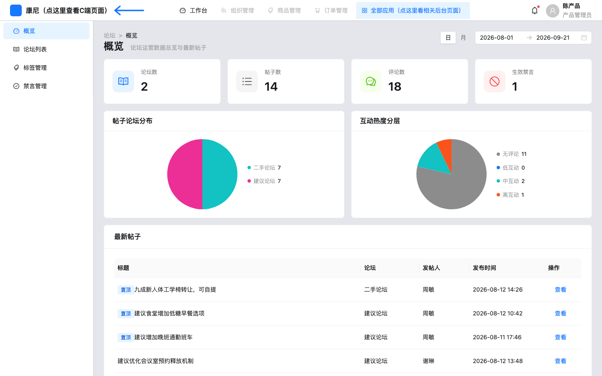
后台-概览-页面整体：面包屑 论坛>概览；副标题「论坛运营数据总览与最新帖子」；日期范围筛 scoped 数据。
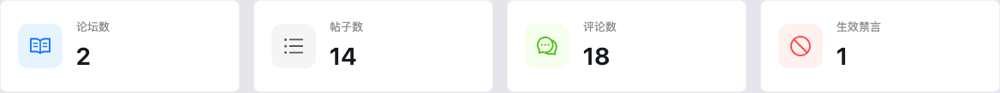
后台-概览-KPI指标卡：四卡：论坛数、帖子数、评论数、生效禁言。点论坛数/帖子数 goToPage(forum-list)；点生效禁言 go forum-risk。评论数无跳转。
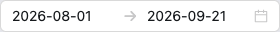
后台-概览-日期筛选：OverviewDateRange，默认 defaultForumOverviewDateRange。改范围重算 KPI/图/表。
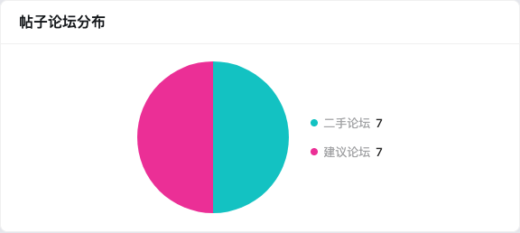
后台-概览-帖子论坛分布：饼图 forumBoardSegments(boardCounts)。空数据走 OverviewPie 空态。
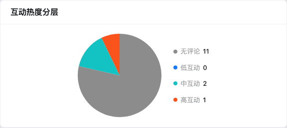
后台-概览-互动热度分层：饼图 forumHeatSegments(heatCounts)。
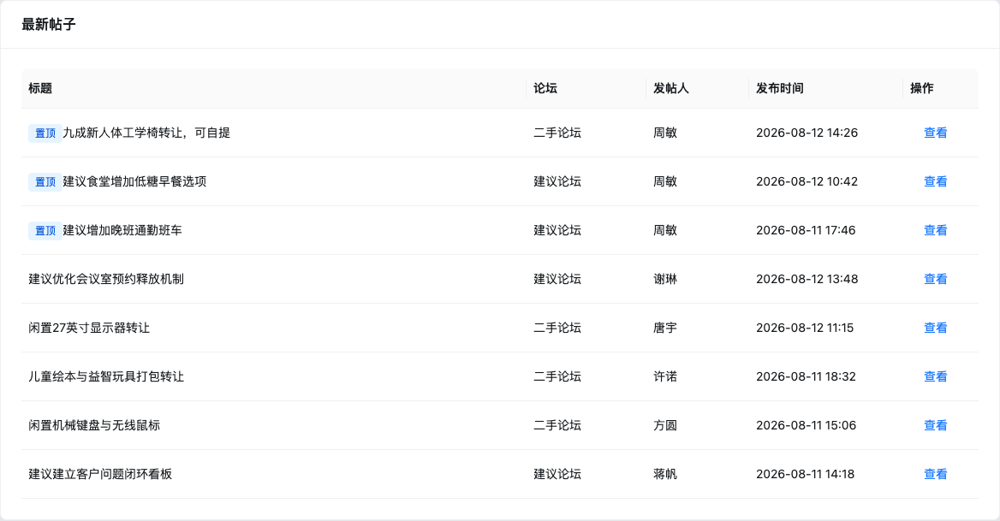
后台-概览-最新帖子表：列：标题(置顶 Tag)、论坛、发帖人、发布时间、操作「查看」→ topic-detail。无分页。空 Empty「暂无帖子」。
| 操作名称 | 组件路径 | 触发元素 | 前置条件 | 启用/禁用逻辑 | 用户动作 | 系统响应 | 状态变化 | 成功反馈 | 失败反馈 | 跳转/接口 |
|---|
| 查看最新帖 | 后台-概览-最新帖子表-查看 | 链接按钮查看 | 行存在 | 始终可点 | 点击 | onNavigate topic-detail | 路由变 | 打开帖详情 | 无 | 内存 getForumTopic |
| 点论坛数 | 后台-概览-KPI指标卡-论坛数 | KPI 卡 | 无 | 可点 | 点击 | 进论坛列表 | 路由 | 列表页 | 无 | 无筛参 |
6.A.2 论坛列表
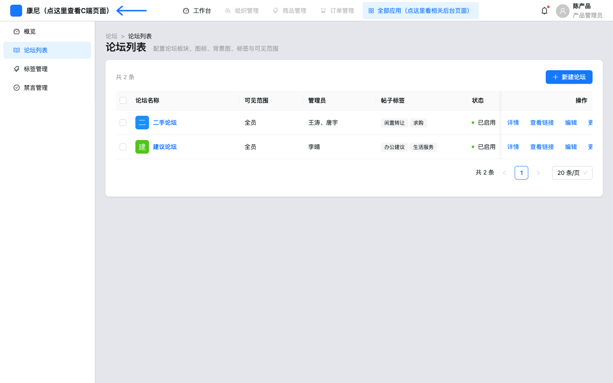
后台-论坛列表-页面整体：只列出 kind=forum（filterBoards）。种子 2 条。无名称/状态搜索面板。
后台-论坛列表-工具栏：「共 N 条」；主按钮「新建论坛」。勾选启用行后出现「批量停用」。
后台-论坛列表-列表表格：列：论坛名称(图标+链接)、可见范围、管理员、帖子标签、状态 Badge、创建时间、操作。分页 pageSize 来自 b2bStandards。
 后台-论坛列表-行操作：可见三项：详情、查看链接、编辑。溢出「更多」含停用/启用。actionsMaxVisible=3。
后台-论坛列表-行操作：可见三项：详情、查看链接、编辑。溢出「更多」含停用/启用。actionsMaxVisible=3。
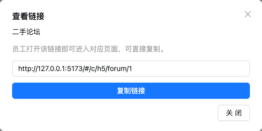
后台-论坛列表-查看链接弹窗：标题「查看链接」；只读 Input C 端 URL；「复制链接」成功 message「链接已复制」，失败「复制失败，请手动复制链接」；底栏「关闭」。
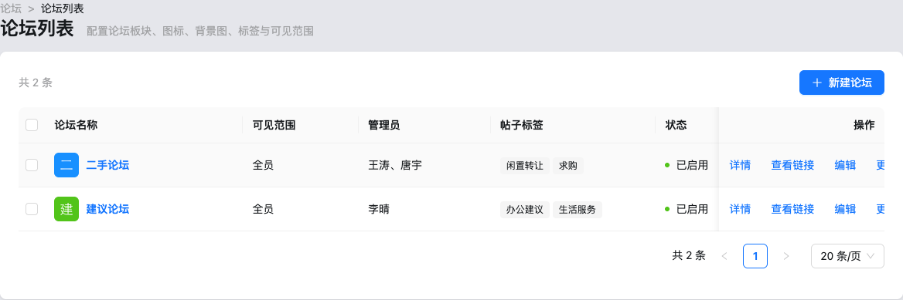
后台-论坛列表-批量停用：行选择 checkbox。未选出启用记录点批量停用会 warning「请选择已启用的记录」。确认文案：停用后前台不可访问，历史数据保留。
| 列名 | 组件路径 | 数据含义 | 格式 | 是否可排序 | 是否可筛选 | 行操作 |
|---|
| 论坛名称 | 后台-论坛列表-列表表格-论坛名称 | board.name | 图标+链接 | 否 | 否 | 进详情 |
| 可见范围 | 后台-论坛列表-列表表格-可见范围 | organizationText | 全员/部门串/自定义人群：共N人/导入人群：文件 | 否 | 否 | — |
| 管理员 | 后台-论坛列表-列表表格-管理员 | manager 顿号拼接 | 文本省略 | 否 | 否 | — |
| 帖子标签 | 后台-论坛列表-列表表格-帖子标签 | board.tags | Tag，空为 — | 否 | 否 | — |
| 状态 | 后台-论坛列表-列表表格-状态 | enabled/disabled | 已启用/已停用 Badge | 否 | 否 | 停用/启用 |
| 创建时间 | 后台-论坛列表-列表表格-创建时间 | createdAt | YYYY-MM-DD HH:mm | 否 | 否 | — |
| 操作名称 | 组件路径 | 触发元素 | 前置条件 | 启用/禁用逻辑 | 用户动作 | 系统响应 | 状态变化 | 成功反馈 | 失败反馈 | 跳转/接口 |
|---|
| 新建论坛 | 后台-论坛列表-工具栏-新建论坛 | 主按钮 | 无 | 始终 | 点击 | go forum-create | 路由 | 打开表单 | 无 | 无接口 |
| 详情 | 后台-论坛列表-行操作-详情 | 链接/按钮 | 记录存在 | 始终 | 点击 | forum-detail/{id} | 路由 | 详情页 | 无 | getForumBoard |
| 查看链接 | 后台-论坛列表-行操作-查看链接 | 按钮 | 非信箱 | 始终 | 点击 | 打开 ForumLinkModal | 弹窗 | 可复制 | clipboard 失败 toast | forumBoardClientUrl |
| 编辑 | 后台-论坛列表-行操作-编辑 | 按钮 | 存在 | 始终 | 点击 | forum-edit/{id} | 路由 | 表单回填 | id 无效 Empty「论坛不存在或已删除」 | 无 |
| 停用/启用 | 后台-论坛列表-行操作-停用 | 更多菜单 | 有记录 | 始终 | 确认框确定 | setForumBoardStatus | status 翻转 | 已停用/已启用 | 取消无变化 | 内存 |
| 批量停用 | 后台-论坛列表-工具栏-批量停用 | 危险按钮 | 已选且含启用 | 未选不出现 | 确认停用 | setForumBoardStatuses disabled | 清空勾选 | 已停用 N 个论坛 | 未选启用 warning | 内存 |
6.A.3 新建/编辑论坛
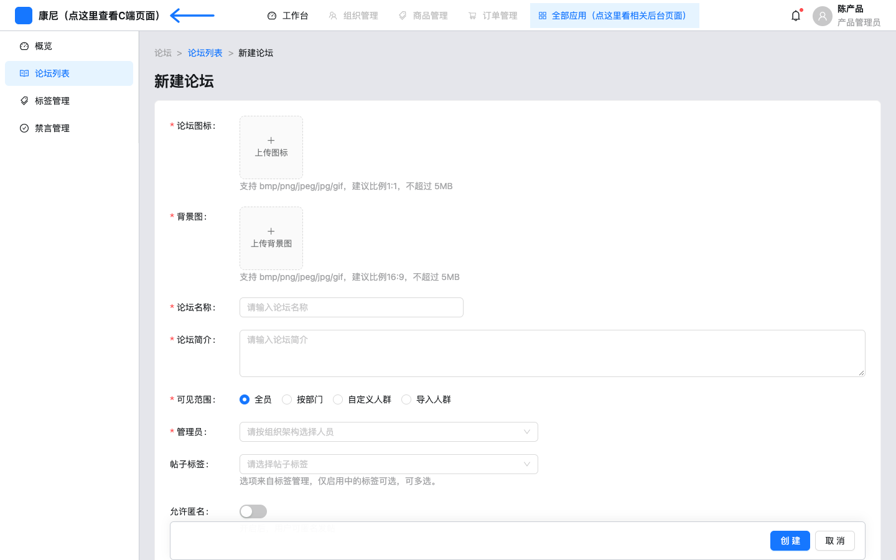
后台-新建论坛-表单页：标题「新建论坛」。编辑页同等字段，图标/背景新建 required，编辑可不改。
后台-新建论坛-图标上传：picture-card maxCount=1，accept 图片。新建 hidden icon required「请上传论坛图标」。hint SQUARE_IMAGE_UPLOAD_HINT。beforeUpload 返回 false，本地 FileReader DataURL。
后台-新建论坛-背景图上传：仅论坛（信箱无此字段）。新建必填「请上传背景图」。COVER_IMAGE_UPLOAD_HINT。
 后台-新建论坛-可见范围：Radio：全员 / 按部门 / 自定义人群 / 导入人群。默认全员。
后台-新建论坛-可见范围：Radio：全员 / 按部门 / 自定义人群 / 导入人群。默认全员。
 后台-新建论坛-按部门：切到按部门出现 TreeSelect 选择部门，必填「请选择部门」，orgDepartmentTree，SHOW_PARENT。
后台-新建论坛-按部门：切到按部门出现 TreeSelect 选择部门，必填「请选择部门」，orgDepartmentTree，SHOW_PARENT。
 后台-新建论坛-自定义人群：TreeSelect 人员，必填「请选择人员」，orgPeoplePickerTree，SHOW_CHILD。
后台-新建论坛-自定义人群：TreeSelect 人员，必填「请选择人员」，orgPeoplePickerTree，SHOW_CHILD。
 后台-新建论坛-导入人群：csv/xlsx 一个文件；下载模板「可见人群导入模板.csv」列：工号,姓名,部门。未上传「请导入人群文件」。importedPeople 编辑时保留，新建路径代码未解析文件名单，{todo}。
后台-新建论坛-底栏操作：sticky：创建/保存 + 取消。dirty 取消二次确认。
后台-新建论坛-导入人群：csv/xlsx 一个文件；下载模板「可见人群导入模板.csv」列：工号,姓名,部门。未上传「请导入人群文件」。importedPeople 编辑时保留，新建路径代码未解析文件名单，{todo}。
后台-新建论坛-底栏操作：sticky：创建/保存 + 取消。dirty 取消二次确认。
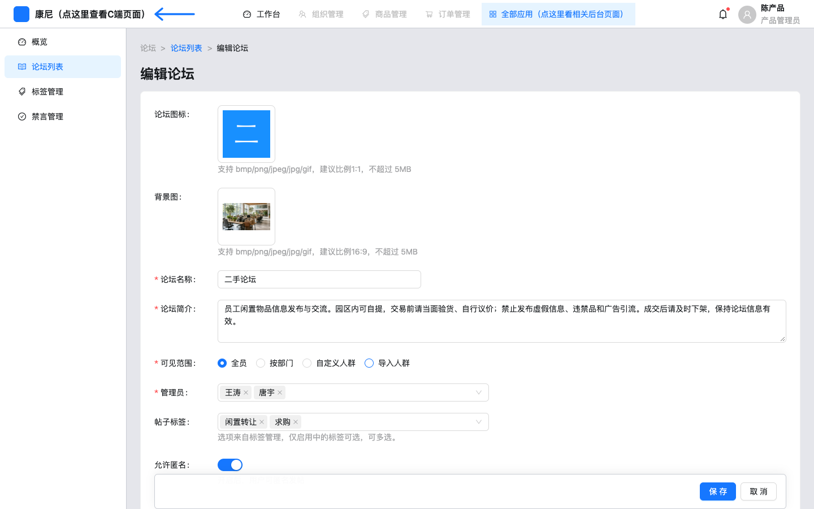
后台-编辑论坛-表单页：回填二手论坛。保存 toast「已保存论坛」。改名 saveForumBoard 级联帖子 boardName（见 store）。
| 字段名称 | 组件路径 | 控件类型 | 是否必填 | 默认值 | 校验规则 | 选项值 | 业务含义 |
|---|
| 论坛图标 | 后台-新建论坛-图标上传 | Upload picture-card | 新建是/编辑否 | 空 | 请上传论坛图标 | 本地图 | C 端头像位 |
| 背景图 | 后台-新建论坛-背景图上传 | Upload | 新建是 | 空 | 请上传背景图 | 本地图 | C 端头图 |
| 论坛名称 | 后台-新建论坛-论坛名称 | Input maxWidth 360 | 是 | 空 | 请输入论坛名称；重名错误 | 自由文本 | 板块名且帖子归属键 |
| 论坛简介 | 后台-新建论坛-论坛简介 | TextArea 3 行 | 是 | 空 | 请输入论坛简介 | 自由文本 | C 端可展开简介 |
| 可见范围 | 后台-新建论坛-可见范围 | Radio.Group | 是 | 全员 | 请选择可见范围 | 全员/按部门/自定义人群/导入人群 | 后台展示；C 端未按此过滤 |
| 管理员 | 后台-新建论坛-管理员 | TreeSelect 多选人员 | 是 | 空 | 请选择管理员 | forumPeoplePickerTree 仅人可选 | C 端 PC 侧栏展示 |
| 帖子标签 | 后台-新建论坛-帖子标签 | Select multiple | 否 | 空 | 仅启用中标签 | enabledForumTagNames scope=forum | C 端 Tab 与发帖单选 |
| 允许匿名 | 后台-新建论坛-允许匿名 | Switch | 否 | false（论坛） | 无 | 开/关 | 开则发帖显示匿名发帖 |
| 组件路径 | 组件类型 | 默认状态 | 显示/隐藏逻辑 | 启用/禁用逻辑 | 数据来源 | 状态变化 | 空/错/加载状态 | 权限/条件控制 |
|---|
| 后台-新建论坛-选择部门 | TreeSelect | 隐藏 | visibility===按部门 | 始终可编 | orgDepartmentTree | 切 Radio 显隐 | 未选提交红字 | 无角色 |
| 后台-新建论坛-选择人员 | TreeSelect | 隐藏 | 自定义人群 | 始终 | orgPeoplePickerTree | 切 Radio | 请选择人员 | 部门节点不可勾 |
| 后台-新建论坛-导入人群 | Upload | 隐藏 | 导入人群 | 始终 | 本地文件名 | 切 Radio | 请导入人群文件 | 无解析校验 |
| 后台-编辑论坛-记录不存在 | Empty | 不显示 | edit 且 getForumBoard 空 | 返回按钮 | 无 | — | 论坛不存在或已删除 | 无 |
6.A.4 论坛详情
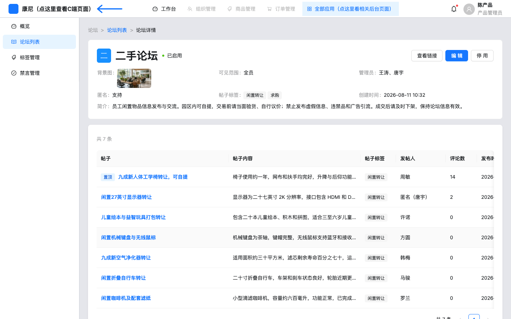
后台-论坛详情-页面整体：上头信息卡 + 下方帖子表。id 无效 Empty + 返回论坛列表。
后台-论坛详情-标题与操作：图标、名称、状态 Badge；按钮查看链接、编辑、停用/启用。停用确认同列表。
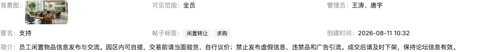
后台-论坛详情-基本信息：Descriptions：背景图缩略、可见范围、管理员、匿名、帖子标签、创建时间、简介 span3。
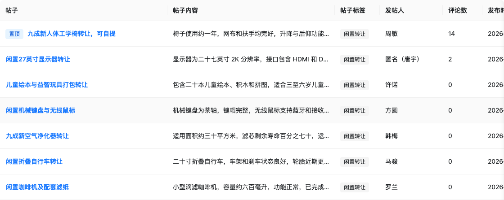
后台-论坛详情-帖子表：embedded 列表无所属论坛列。列：帖子(置顶 Tag+标题链)、帖子内容、帖子标签、发帖人、评论数、发布时间、操作。空「暂无帖子」。pageSize 20。
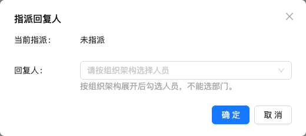
后台-论坛详情-指派回复人弹窗：显示当前指派；TreeSelect 回复人 extra「按组织架构展开后勾选人员，不能选部门」。确定 setTopicAssignees，有人 toast「已指派回复人」，清空「已取消指派」。
| 操作名称 | 组件路径 | 触发元素 | 前置条件 | 启用/禁用逻辑 | 用户动作 | 系统响应 | 状态变化 | 成功反馈 | 失败反馈 | 跳转/接口 |
|---|
| 置顶/取消置顶 | 后台-论坛详情-帖子表-置顶 | 更多菜单 | 论坛帖 | 始终 | 确认 | setTopicPin board 或空 | pinScope；列表置顶 Tag；排序置顶优先 | 已设为置顶/已取消置顶 | 取消无变化 | 内存 |
| 下架/重新上架 | 后台-论坛详情-帖子表-下架 | 更多菜单危险 | 论坛帖 | 始终 | 确认 | setTopicShelf | off 则 C 端不可见 | 已下架，C 端不可见 / 已重新上架 | 取消无变化 | 内存 |
| 指派回复人 | 后台-论坛详情-指派回复人弹窗 | 行按钮 | 论坛帖 | 始终 | 勾人选确定 | setTopicAssignees | replyAssignees | 已指派/已取消指派 | 无校验失败 | 内存 |
6.A.5 帖子详情
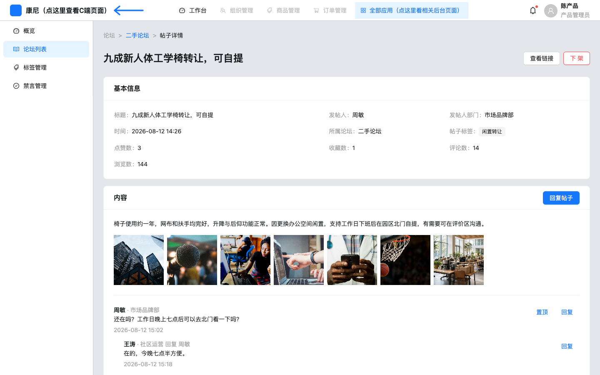
后台-帖子详情-页面整体：面包屑 论坛 > 板块名 > 帖子详情。种子帖「九成新人体工学椅转让，可自提」。
后台-帖子详情-标题与操作：H1 标题；查看链接；下架(danger)/重新上架。
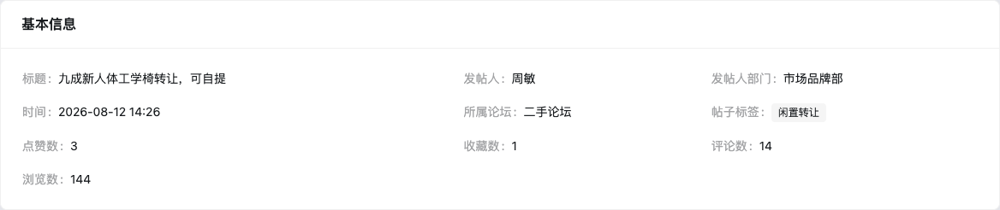
后台-帖子详情-基本信息：标题、发帖人（匿名帖为「匿名（真名）」如匿名（唐宇））、发帖人部门、时间、所属论坛、帖子标签、点赞/收藏/评论/浏览数。C 端不展示真名。
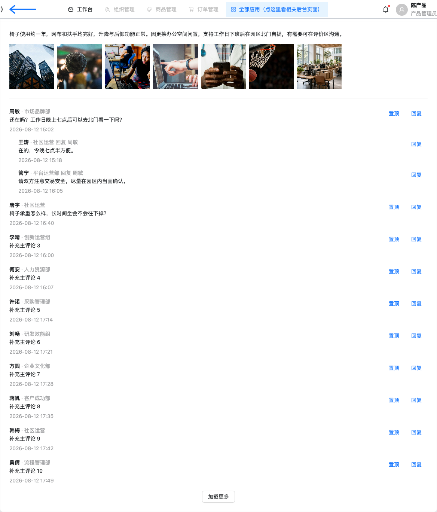
后台-帖子详情-内容与评论：正文、图片 PreviewGroup 无图显示「暂无图片」；主评线程；置顶/回复；超过 10 条「加载更多」。
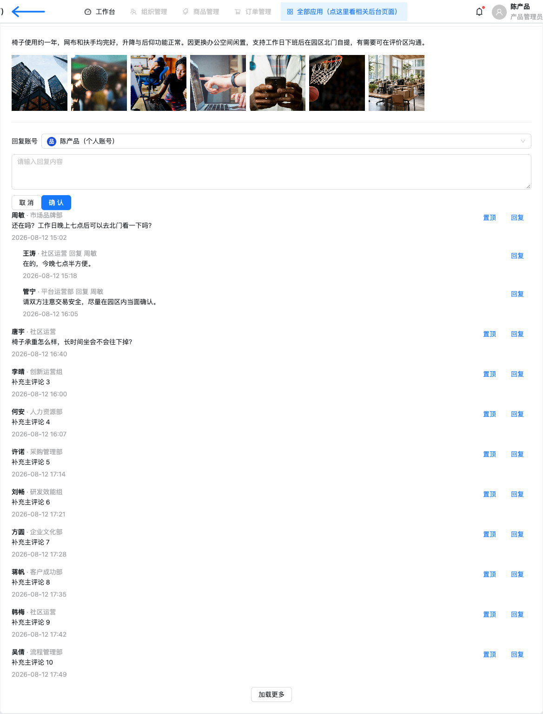
后台-帖子详情-回复帖子表单：点「回复帖子」展开 MomentInlineReplyForm。账号 forumCommentReplyAccountOptions。成功「已回复帖子」。内容校验 validateForumComment：空且无图「请输入回复内容」；≤200 字。
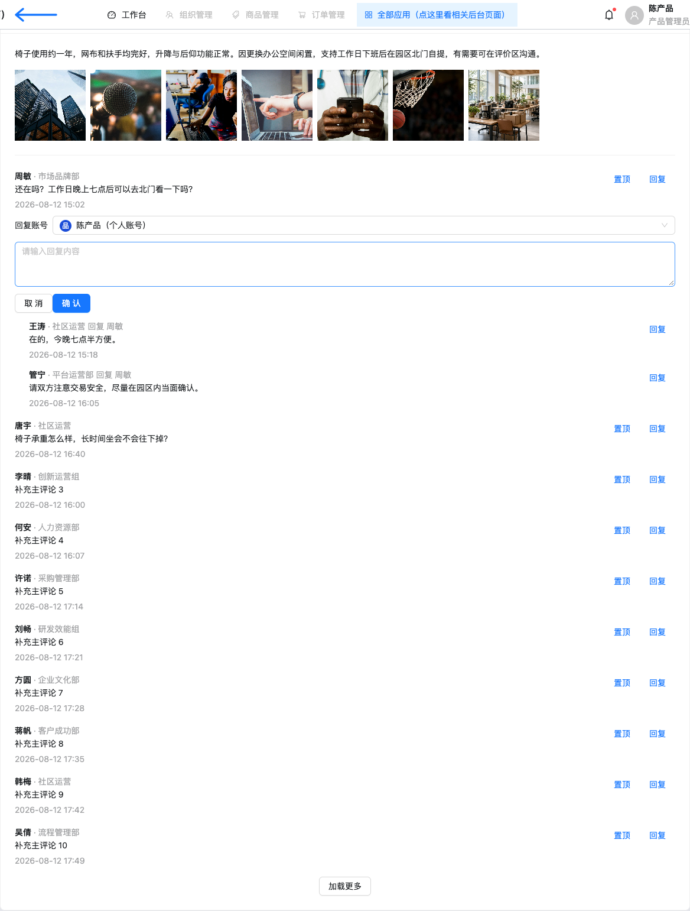
后台-帖子详情-回复评论：点回复评论/回复楼层，表单锚到该层。成功「已回复评论」。addTopicReply。
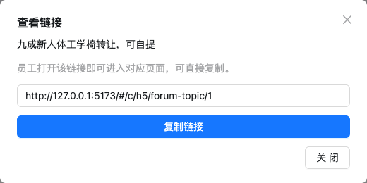
后台-帖子详情-查看链接弹窗：URL 为 #/c/h5/forum-topic/{id}。
置顶评论：确认框后 setTopicCommentPin。审核记录 Card 仅 auditHistory 有数据时出现（种子多数论坛帖无此卡）。
6.A.6 标签管理
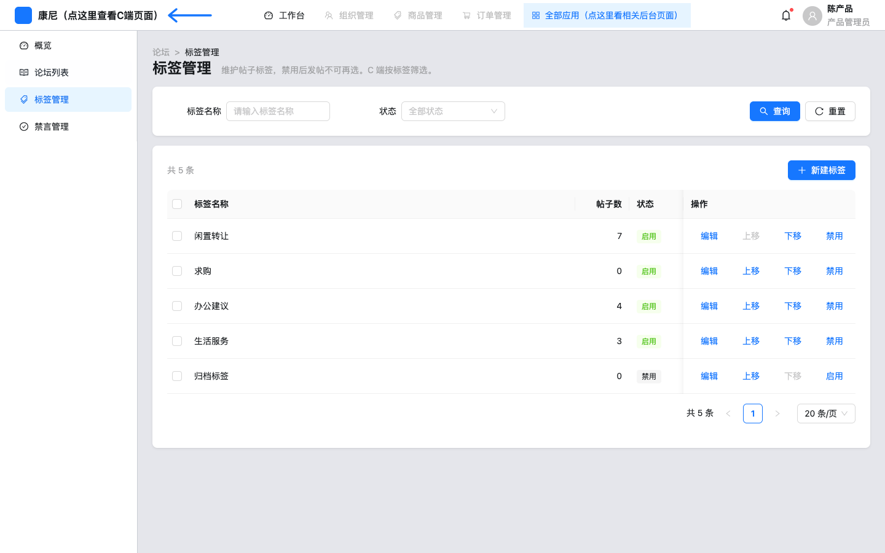
后台-标签管理-页面整体：副标题：维护帖子标签，禁用后发帖不可再选。C 端按标签筛选。
后台-标签管理-查询筛选：标签名称 Input；状态 Select 启用/禁用。查询写 query，重置清空。
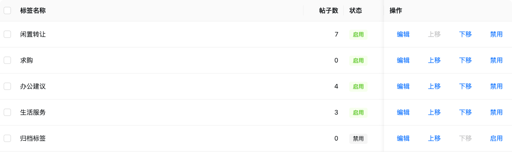
后台-标签管理-列表表格：标签名称、帖子数、状态 Tag、操作：编辑/上移/下移/启用禁用/删除。首行上移 disabled，末行下移 disabled。勾选后批量启用/禁用。
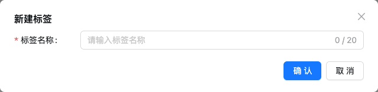
后台-标签管理-新建弹窗：标签名称必填空白校验、max20 showCount、重名 validateForumTagName。确认 upsertForumTag。
后台-标签管理-删除确认：有引用则写将从 N 个帖子中移除；无引用「当前无关联帖子」。删除不可恢复。
6.A.7 禁言管理
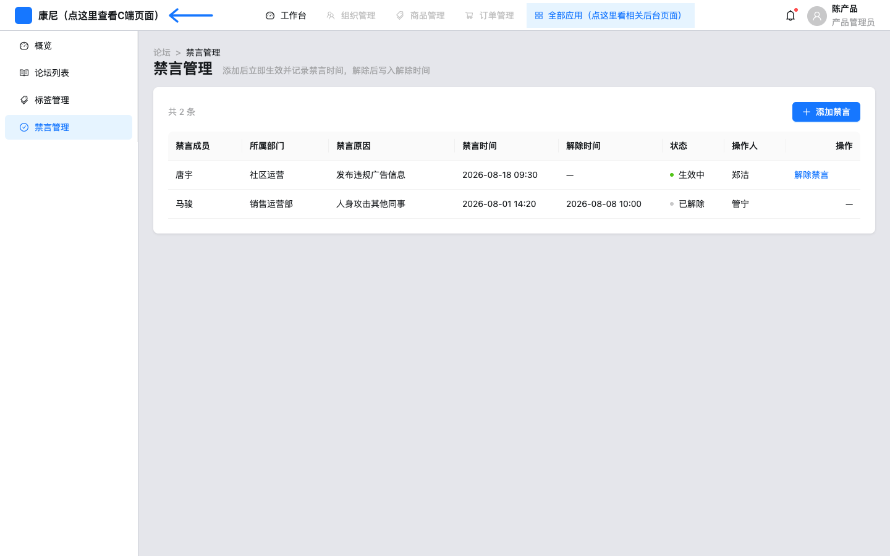
后台-禁言管理-页面整体：副标题：添加后立即生效并记录禁言时间，解除后写入解除时间。无分页。
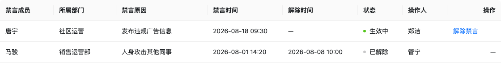
后台-禁言管理-列表表格：禁言成员、所属部门、禁言原因、禁言时间、解除时间(空 —)、状态 生效中/已解除、操作人、操作。仅生效中有「解除禁言」。空「暂无禁言成员」。
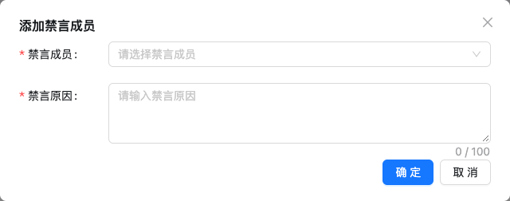
后台-禁言管理-添加弹窗：禁言成员 Select 搜索 FORUM_USER_OPTIONS「姓名 · 部门」；原因 TextArea max 100 showCount。确定 addMute，operator 默认管宁。
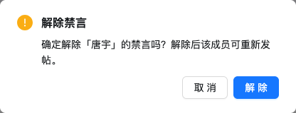
后台-禁言管理-解除确认：文案：解除后该成员可重新发帖。releaseMute 写 releasedAt，active=false。toast「已解除禁言」。
| 字段名称 | 组件路径 | 控件类型 | 是否必填 | 默认值 | 校验规则 | 选项值 | 业务含义 |
|---|
| 禁言成员 | 后台-禁言管理-添加弹窗-禁言成员 | Select showSearch | 是 | 空 | 请选择禁言成员 | FORUM_USER_OPTIONS | 对被禁人名拦截发评 |
| 禁言原因 | 后台-禁言管理-添加弹窗-禁言原因 | TextArea | 是 | 空 | 请输入禁言原因；≤100 | 自由文本 | 列表展示 |
6.B H5
6.B.1 板块页
H5-板块页-页面整体：无传统顶栏标题，头图叠导航返回。种子二手论坛。
H5-板块页-头图区：headerImage、图标、名称+「N帖子」（可见帖计数）、简介按钮展开/收起 aria-label。无简介不渲染按钮。
H5-板块页-搜索框：placeholder「搜索帖子」。匹配标题/标签/正文/作者名（含匿名展示名）。前端过滤无独立结果页。
H5-板块页-标签Tab：全部 + board.tags。点 Tab 按 topic.tags includes。
H5-板块页-排序：默认「最新回复」is-on；可切「最新发布」。sortClientForumTopics。
H5-板块页-帖子列表：作者、置顶/标签/标题、缩略图 ForumPhotoGrid、摘要、统计评论赞藏浏览。自己的帖 ForumOwnTopicActions 编辑/删除。待回复加 class 与横幅。
H5-板块页-匿名作者：显示器帖展示【匿名用户】四位序号、头像「匿」、无部门。可同时出现「需要你回复」。不露唐宇真名。
H5-板块页-发布按钮：FAB「立即发布」打开 compose 新建。
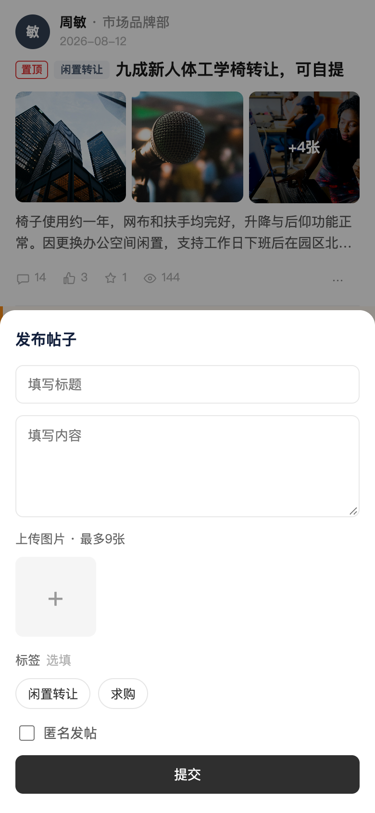
H5-发布帖子-表单：标题、内容、图最多9、标签选填单选可取消、匿名发帖（仅板块允许匿名且非编辑）。提交；遮罩关闭 aria 关闭。
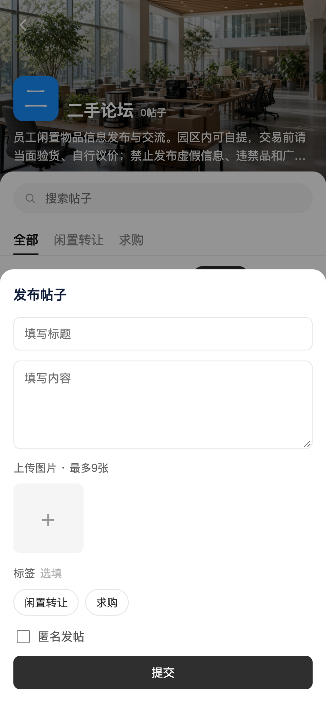
H5-板块页-空态：?empty=1 走 usePreviewList 空。文案「暂无帖子」。头图仍在。
H5-板块页-不存在：id 无效或停用：顶栏标题「论坛」，主文案「论坛不存在或已停用」。
| 操作名称 | 组件路径 | 触发元素 | 前置条件 | 启用/禁用逻辑 | 用户动作 | 系统响应 | 状态变化 | 成功反馈 | 失败反馈 | 跳转/接口 |
|---|
| 立即发布 | H5-板块页-发布按钮 | FAB | 板 enabled | 板不存在无 FAB | 点开表单提交 | publishClientTopic | 列表前插新帖 audit 直接发布 shelf on | toast 发布成功 | 请填写标题 / 禁言未拦发帖 | 内存 |
| 编辑自己的帖 | H5-板块页-帖子列表-编辑 | 操作 | author===周敏 | 他人无按钮 | 提交 | updateClientTopic | 改标题内容图表 | 已保存 | 只能编辑自己的帖子 / 请填写标题 | 内存 |
| 删除自己的帖 | H5-板块页-帖子列表-删除 | 操作 | 自己的帖 | 他人无 | 底表确认删除后无法恢复 | deleteClientTopic | 从 store 移除 | 无成功 toast | 只能删除自己的帖子 | H5DeleteSheet |
| 进帖 | H5-板块页-帖子列表-标题区 | a.href | 可见帖 | 始终 | 点击 | hash forum-topic | 路由 | 详情 | 不可见直链空态 | 无 API |
6.B.2 帖子详情
H5-帖子详情-页面整体：顶栏返回到板块，标题为 boardName。
H5-帖子详情-正文：作者、置顶/标签/标题、正文、大图网格、ForumPostStats。
 H5-帖子详情-点赞收藏：底栏：写评论输入、发送、赞数、星标收藏。toggleTopicLike / toggleTopicFavorite。
H5-帖子详情-点赞收藏：底栏：写评论输入、发送、赞数、星标收藏。toggleTopicLike / toggleTopicFavorite。
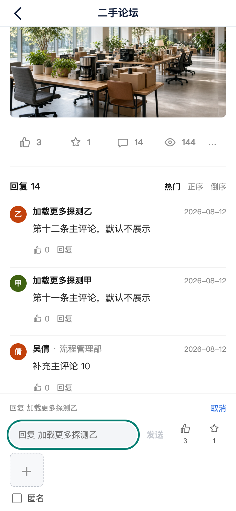
H5-帖子详情-评论输入：点评论回复展开 composer；可附图 cap 9。发送 addClientTopicComment 或 Reply。
H5-帖子详情-匿名评论勾选：二手论坛允许匿名时，展开评论区出现 checkbox 文案「匿名」，aria-label「匿名评论」。勾选后评论 authorAnonymous=true。
H5-帖子详情-匿名帖：id=4 显示器帖：楼主【匿名用户】+序号；评论人同样匿名序号（同帖内作者映射稳定）。
H5-帖子详情-匿名评论人：评论头像「匿」+【匿名用户】四位号，无部门。回复按钮 aria「回复 【匿名用户】xxxx」。
H5-帖子详情-不存在：下架/驳回/待审/无板：「帖子不存在」。
评论排序热度/时间代码状态 commentSort，默认 hot。删除自己的评/回复走确认 sheet。点赞评论 toggleClientTopicCommentLike。自己的匿名评显示「我」。
6.B.3 我的帖子
H5-我的帖子-页面整体：myClientForumTopics：非信箱、可见、author 周敏。可编辑删除进详情。
H5-我的帖子-空态：empty=1「暂无帖子」。
6.C PC
PC-板块页-页面整体：PcActivityShell 标题=板块名。左 feed 右 sidebar。
PC-板块页-头图区：同 H5 头图+简介展开，h2 名称+帖数。
PC-板块页-帖子列表：搜索/Tab/排序/帖列表逻辑与 H5 相同；缩略最多 5。匿名规则同 H5。
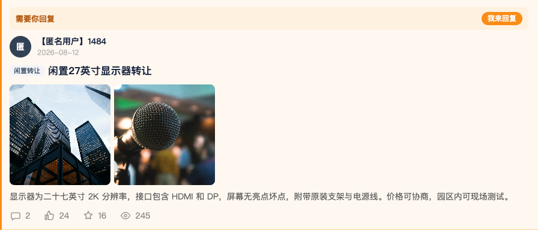
PC-板块页-匿名作者：与 H5 同一套 topicAuthorName：【匿名用户】序号、头像匿。
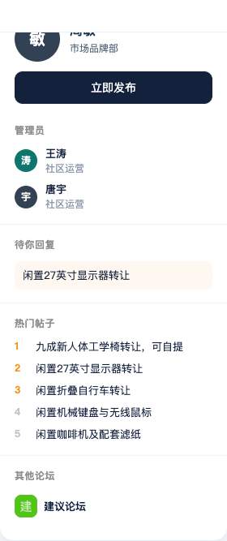
PC-板块页-侧栏：当前用户周敏+部门；立即发布；管理员列表；待你回复；热门帖子；其他论坛。
PC-板块页-立即发布：侧栏主按钮，打开同一 H5ForumCompose。
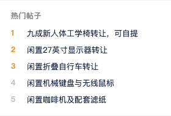
PC-板块页-热门帖子：按回复数再赞数取前 5，序号 1–5。
PC-板块页-其他论坛：其他 enabled 论坛链到 #/c/pc/forum/{id}。
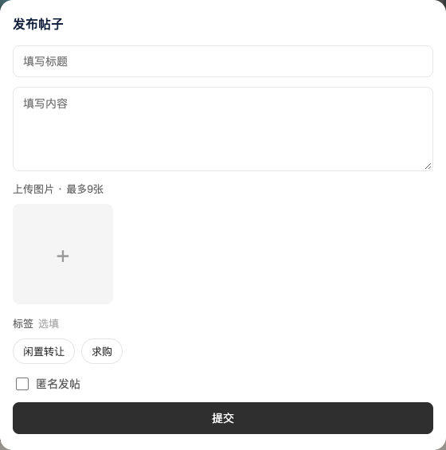
PC-发布帖子-表单：与 H5 同一浮层组件。
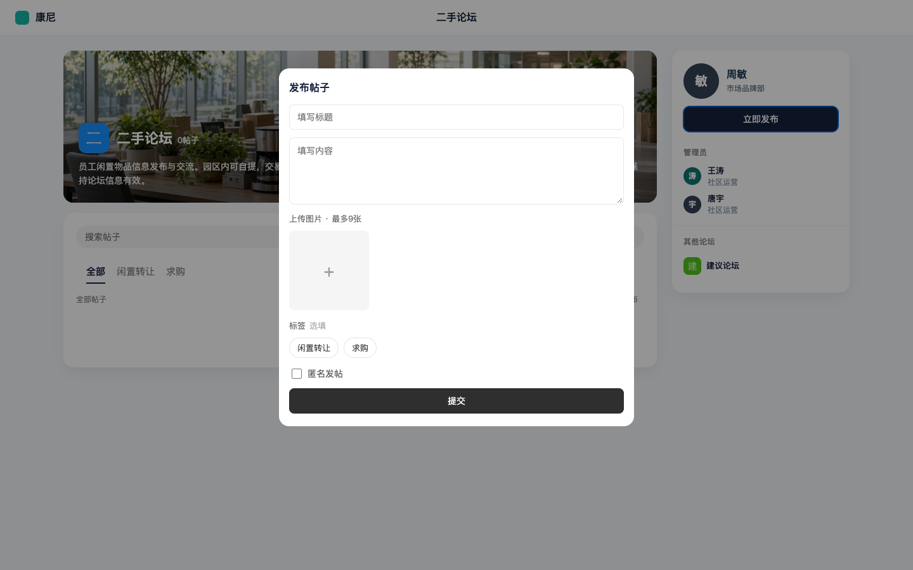
PC-板块页-空态：empty=1 列表「暂无帖子」，侧栏仍在。
PC-帖子详情-页面整体：宽屏正文+评论+composer；板不存在/帖不可见走空文案。
PC-帖子详情-匿名帖：显示器帖详情：楼主与评论均为【匿名用户】序号。
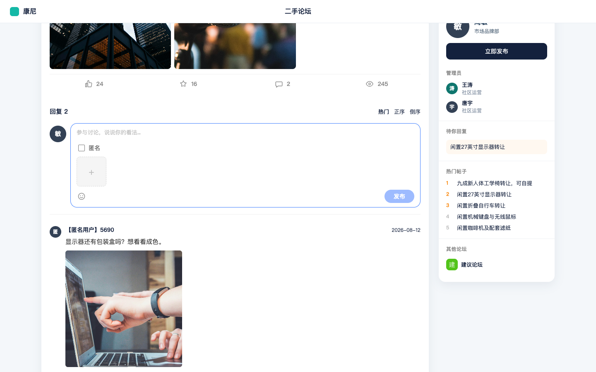
PC-帖子详情-匿名评论勾选：聚焦「写评论」后输入框内出现「匿名」勾选（aria 匿名评论）与附图、发布。placeholder「参与讨论，说说你的看法…」。
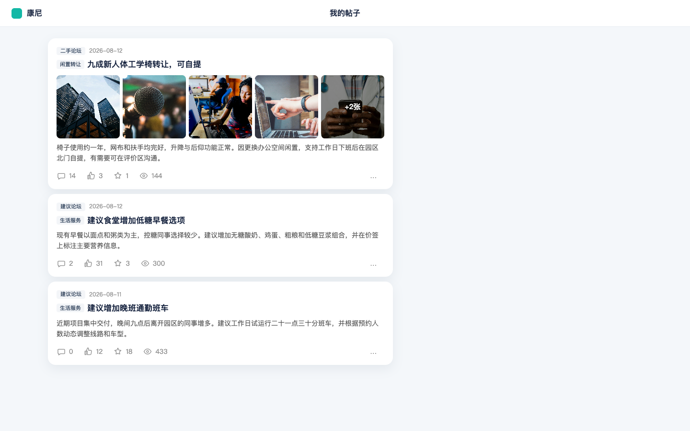
PC-我的帖子-页面整体：壳标题「我的帖子」。门户未放入口，hash 可开。
PC 停用板：PcActivityShell 标题「论坛」+「论坛不存在或已停用」。